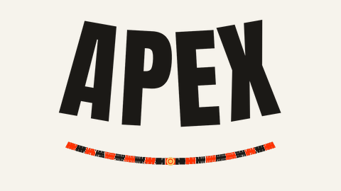

Alle SerienPorsche Carrera Cup DeutschlandKalender & Zeitplan
Kalender – alle Rennen mit Startzeiten in deutscher Zeit, Wertung und Sender.
Für Handy, Google oder Outlook – aktualisiert sich automatisch
Saison auf der Karte
Kartengrundlage: Natural Earth (gemeinfrei)
Saison 2027abgeschlossen
8 Wochenenden
Vorläufiger Kalender. Startzeiten veröffentlicht die Porsche Carrera Cup Deutschland meist erst kurz vor der Saison.
-
Die Sessionzeiten folgen, sobald der offizielle Zeitplan vorliegt.
-
Die Sessionzeiten folgen, sobald der offizielle Zeitplan vorliegt.
-
Die Sessionzeiten folgen, sobald der offizielle Zeitplan vorliegt.
-
Die Sessionzeiten folgen, sobald der offizielle Zeitplan vorliegt.
-
Die Sessionzeiten folgen, sobald der offizielle Zeitplan vorliegt.
-
Die Sessionzeiten folgen, sobald der offizielle Zeitplan vorliegt.
-
Die Sessionzeiten folgen, sobald der offizielle Zeitplan vorliegt.
-
Die Sessionzeiten folgen, sobald der offizielle Zeitplan vorliegt.
Saison 2026abgeschlossen
8 Wochenenden
-
2 24–26Apr Red Bull RingSieger Sa: Marcus Amand (Proton Competition) · So: Flynt Schuring (Schumacher CLRT)
-
3 14–17Mai Spa-FrancorchampsSieger Sa: Flynt Schuring (Schumacher CLRT) · So: Flynt Schuring (Schumacher CLRT)
-
5 18–21Jun LausitzringSieger Sa: Keagan Masters (Proton Competition) · So: Keagan Masters (Proton Competition)
-
6 03–05Jul NorisringSieger Sa: Gustav Burton (Forch Racing by Atlas Ward) · So: Flynt Schuring (Schumacher CLRT)
-
7 14–16Aug NürburgringSieger Sa: Robert de Haan (Proton Competition) · So: Chester Kieffer (Schumacher CLRT)
-
8 09–11Okt HockenheimringSieger Sa: Chester Kieffer (Schumacher CLRT) · So: Niels Langeveld (Laptime-Performance)
Wertung
Endstand 2026 · Hockenheim, 11.10.2026Endstand 2026 · Hockenheim, 11.10.2026
Saison 2027 noch ohne Wertung
- 1Keagan MastersChampionProton Competition230
- 2Flynt SchuringSchumacher CLRT217
- 3Theo OeverhausID Racing204
- 4Alexander TauscherTarget202
- 5Matheus FerreiraTeam GP Elite167
- 6Marcus AmandProton Competition / Forch Racing by Atlas Ward140
- 7Wouter BoerekampsTeam GP Elite124
- 8Chester KiefferSchumacher CLRT123
- 9Sam JongejanTeam75 Bernhard98
- 10Dirk SchoutenLooping by CarTech94
- 11Niels LangeveldLaptime-Performance86
- 12Joseph WarhurstTarget83
- 13Gustav BurtonForch Racing by Atlas Ward71
- 14Robert de HaanProton Competition60
- 15Sebastian FreymuthLaptime-Performance53
- 16Daniel RosTeam Proton53
- 17Caleb SumichTarget44
- 18Gian Luca TüccarogluTeam75 Bernhard36
- 19Louis PerrotForch Racing by Atlas Ward32
- 20Gustav BergströmTeam Proton26
- 21Montego MaassenForch Racing by Atlas Ward21
- 22Janne StiakForch Racing by Atlas Ward16
- 23Dylan YipTeam Proton16
- 24Nick HoTeam GP Elite15
- 25Jonas GreifGP Elite10
- 26Max MutschlechnerTarget Competition7
- 27William SiverholmTeam Proton4
- 28David DziwokGP Elite4
- 29Hoang Dat SawerGP Elite2
- 30Alexandra VatevaTarget Competition1
- 31Milan MarczakTeam Proton1
Wo schauen?
Deutschland
Laut Serie streamt TV-Partner ProSieben die Rennen kostenlos auf Joyn. Außerdem laufen beide Rennen jedes Wochenendes live im Porsche Motorsport Hub und auf den Facebook- und YouTube-Kanälen der Serie.
Österreich
In den offiziellen Angaben ist kein Sender für Österreich genannt. Live im Porsche Motorsport Hub und auf den Facebook- und YouTube-Kanälen der Serie.
Schweiz
In den offiziellen Angaben ist kein Sender für die Schweiz genannt. Live im Porsche Motorsport Hub und auf den Facebook- und YouTube-Kanälen der Serie.
Stand: Angaben der Serie auf racing.porsche.com zum Saisonfinale 2026; die Übertragung 2027 ist noch nicht veröffentlicht. Geprüft am 20.11.2026.
Regeln
Porsches deutscher Markenpokal: alle fahren den 911 Cup, zwei Sprintrennen an jedem Wochenende.
Serie
Den Carrera Cup Deutschland gibt es seit 1990. Eine Saison hat acht Wochenenden, die meisten im Rahmen der DTM; 2026 und 2027 beginnt sie in Imola beim Lauf der Langstrecken-WM. Höchstens 32 Autos stehen am Start, feste Starter und Gaststarter.
Wochenende
Auf ein freies Training folgt das Qualifying mit zwei Wertungen (Qualifying 1 und Qualifying 2), jedes der beiden Rennen hat seine eigene Pole-Position. Rennen 1 läuft meist am Samstag, Rennen 2 am Sonntag, jedes über 30 Minuten plus eine Runde.
Punkte
In jedem Rennen bekommen die ersten 15 25, 20, 16, 13, 11, 10, 9, 8, 7, 6, 5, 4, 3, 2 und 1 Punkt.
Auto
Alle fahren den Porsche 911 Cup der Generation 992.2. Eine Traktionskontrolle gibt es nicht, das Antiblockiersystem (ABS) ist seit 2026 wieder erlaubt.
Wertungen
Neben der Gesamtwertung gibt es eigene Wertungen für ProAm-Fahrer ohne professionellen Rennsport-Hintergrund, für Rookies in ihrer ersten vollen Saison und für Teams. ProAm-Autos tragen dunkelblaue Startnummern, Rookies orangefarbene Aufkleber.